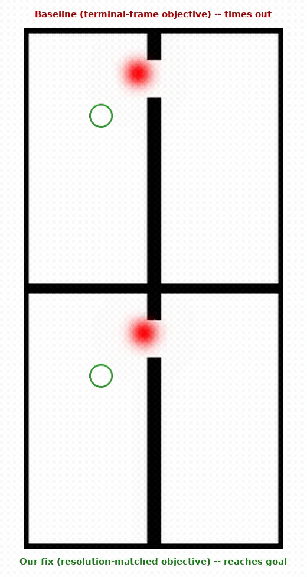
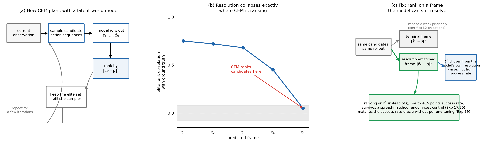
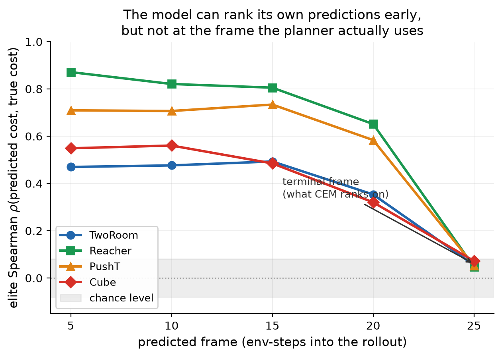
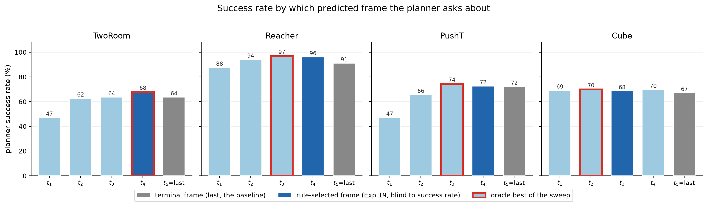
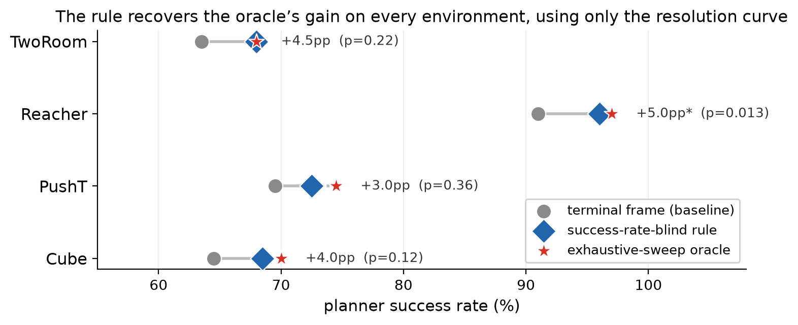

The short version
Planning with a learned world model almost always works the same way: sample a bunch of candidate action sequences, roll each one forward through the model, and rank candidates by how close the model's final predicted latent state is to the goal. That ranking step is the entire planner — if it's wrong, no amount of search budget fixes it.
We measured how good that ranking actually is, frame by frame, on four continuous-control environments (TwoRoom, PushT, Reacher, Cube) built on top of LeWM, a pretrained joint-embedding world model. The result is blunt: the correlation between the model's predicted candidate quality and the true candidate quality is strong five or ten steps into the rollout, and collapses to chance right at the terminal frame CEM ranks on. Every environment we tried shows the same pattern.
- Showed the collapse tracks CEM's own planning horizon, not a fixed number of steps — stretch the horizon by 3 steps and the collapse point moves outward by exactly 3 steps.
- Fixed it by ranking candidates on a frame the model can still resolve instead of the terminal one, for a 3 to 15 point planner success rate gain with zero retraining and zero extra test-time compute.
- Ruled out the boring explanation with two independent random-cost controls matched in magnitude to the real fix — this isn't just "adding another term to the objective helps."
- Built a rule that picks the right frame directly from the model's own resolution curve, no success-rate labels or per-environment tuning required, landing within 2 points of an exhaustive-sweep oracle on every environment.
What's going on, in one picture

Finding the collapse

A horizon-manipulation test confirms this isn't an artifact of a fixed prediction horizon: change CEM's planning horizon and the collapse point moves with it, step for step. That's what you'd expect if the model's resolving power runs out at a roughly fixed number of steps ahead, regardless of where the planner happens to put its terminal frame.
The fix
Once you know where the model can still resolve candidates, rank on that frame instead of the terminal one.

That gain survives the obvious objection — "you just added a second term to the cost, of course it helps." Two random-cost controls, each matched in magnitude to the real resolution-matched cost, rule it out. An additive matched-noise control is beaten by 11 to 13 points at p < 0.001. A replacement control is more dramatic: swapping in noise of identical scale instead of the real signal collapses success rate by 23 to 94 points.

Checkpoints
Planning in every experiment here goes through the officially released, pretrained LeWM checkpoints — nothing about the base world model is retrained or fine-tuned as part of this work.
| checkpoint | role | source |
|---|---|---|
| lewm-tworooms / -pusht / -reacher / -cube | the frozen world model everything plans through | quentinll (official LeWM release) |
| {env}_rnd.pt | RND novelty baseline for the replacement-control experiment | TingheOliver/lewm-resolution-collapse (this work) |
| {env}_*_probe.pt | linear probes decoding physical state from LeWM's latent space |
The RND nets and probes are the only things actually trained as part of this work — a few hundred KB to a few MB each, documented on their model card.
Running it yourself
Every figure above regenerates from results already checked into the repo, no GPU required:
python analyze_rank_fidelity.py # elite-set ranking fidelity numbers python plot_paper_resolution.py # resolution curve figure python plot_paper_success_example.py # the closed-loop episode figure
To run an experiment from scratch, given the pretrained checkpoint and dataset:
python exp_resolution_curve.py --env tworoom python exp_frame_sweep.py --env reacher --n-eval 200
Full instructions, dependencies, and a file-by-file guide to the repo are in the README.